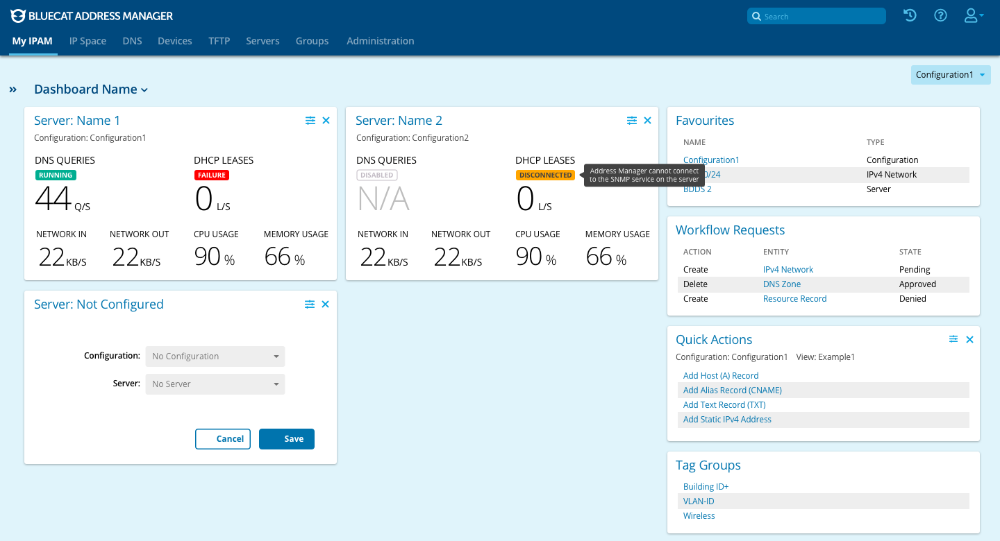
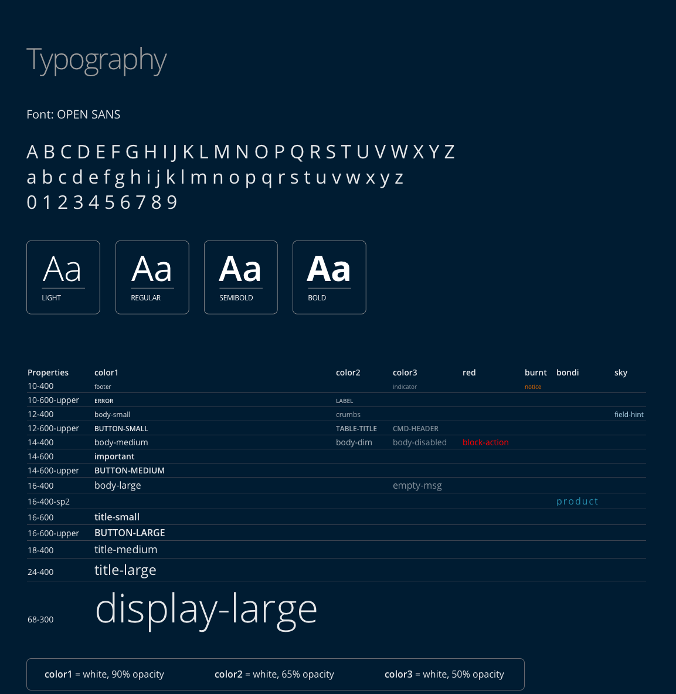
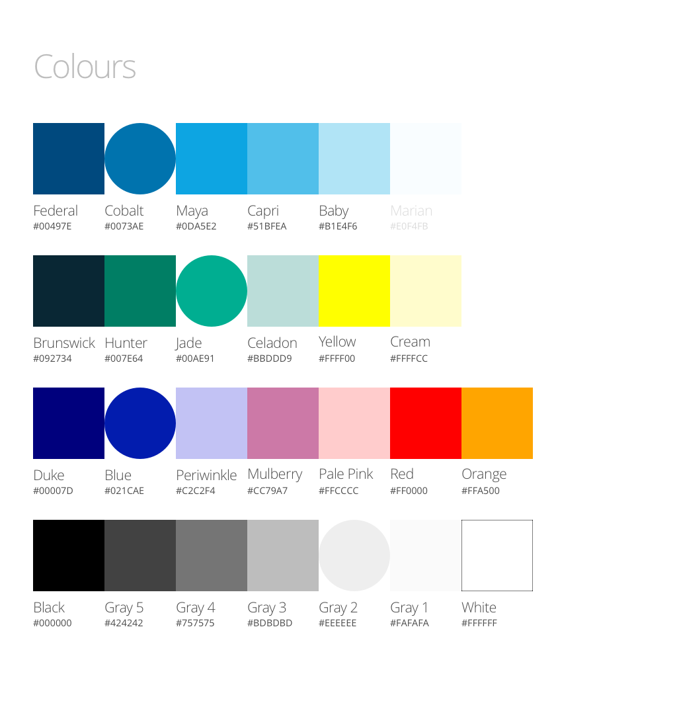
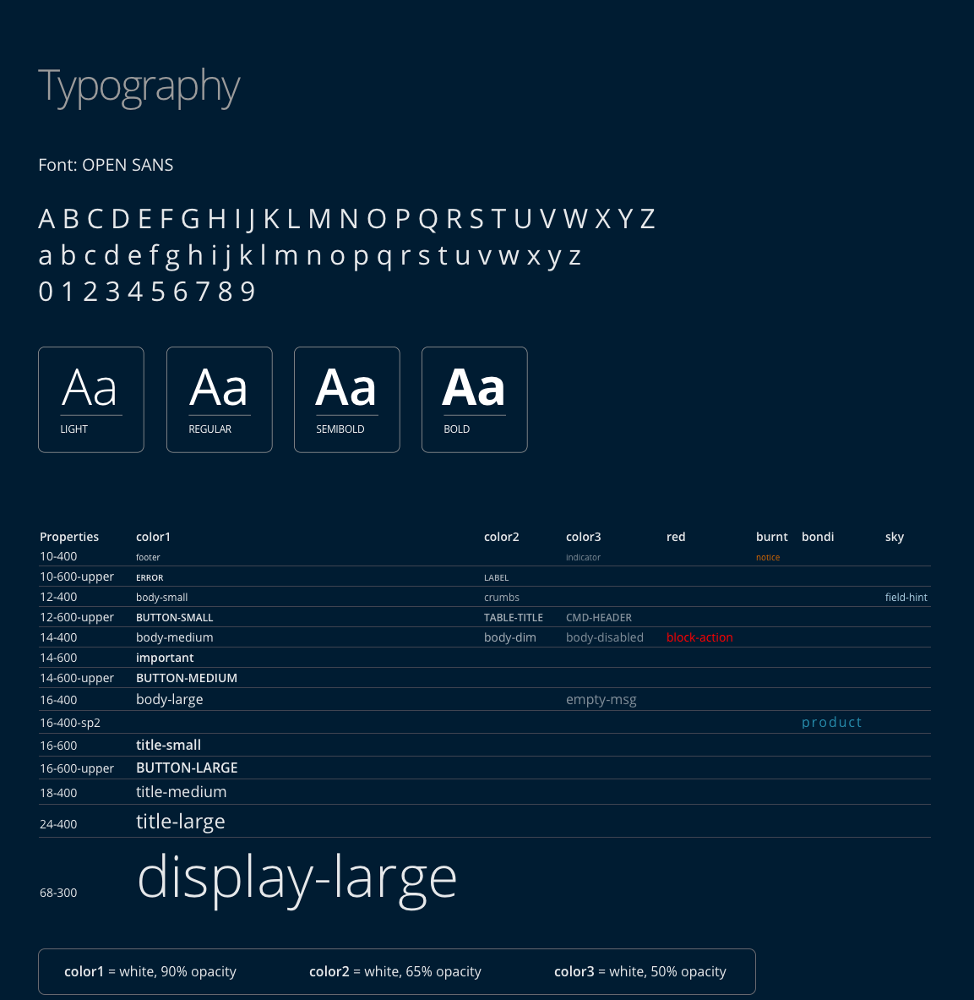
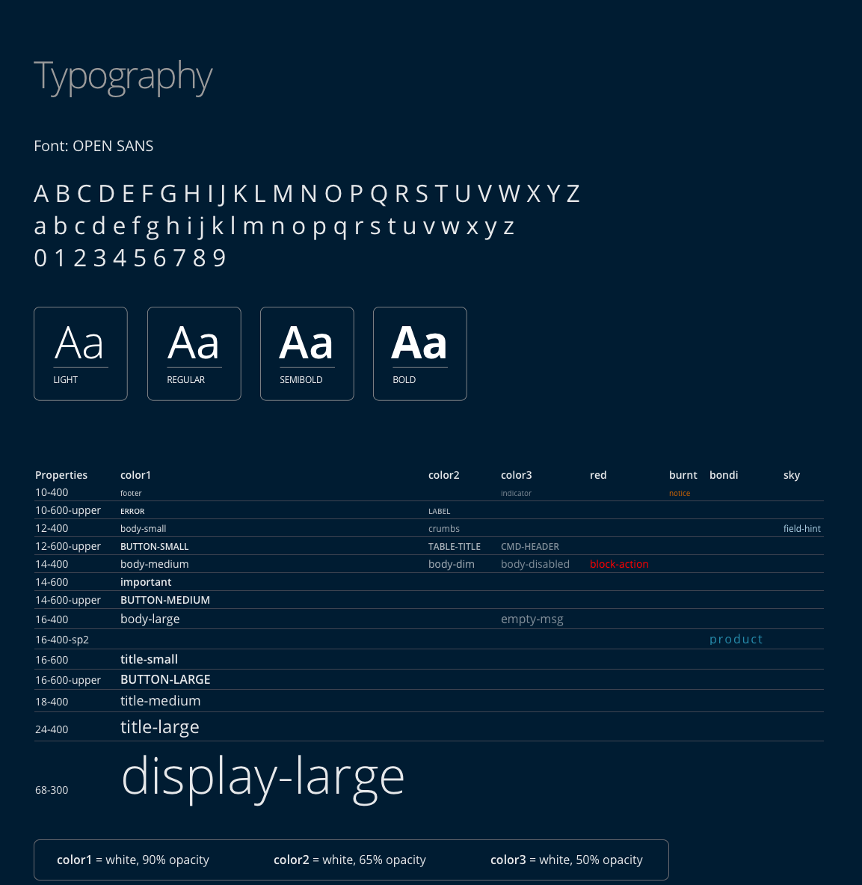

BlueCat is a business to business company that enables a new approach to tackling
complexity at the network edge and DNS. These are the foundations of increasingly complex enterprise networks,
with BlueCat being the leader in Adaptive DNS - scaling to meet escalating demands by users, applications,
and services. Having a broad overview of all the products will give some basic familiarity towards what types of
projects the UX team does at BlueCat.
BlueCat has three products: Integrity, Edge, and Gateway.
Integrity: Also referred to as BAM (BlueCat Address Manager), it serves as the user interface for BDDS (BlueCat
DNS/DHCP Server). BAM is used to bring up/down servers and manage their configuration.
Edge: A cloud-based DNS threat and logging platform, where it records incoming queries and determines
if they are a risk to the network. Gives cybersecurity and network teams visibility and control over internal and
external DNS traffic.
Gateway: A Python-based web utility that leverages the Address Manager API to allow you to create custom workflows
of common Address Manager tasks.
user research + interaction design + ux
001. redesigning the UI of a flagship product, BlueCat Gateway
overview:
Modernizing the UI according to the
company design system to ensure efficient user taskflow and satisfaction in a contemporary
layout (note that progress is currently ongoing).
customer problem
The current UI of BlueCat Gateway is outdated compared to newer products such as BlueCat Edge. With this UI overhaul,
the idea of a new dashboard concept is put to question as well.
goal
Establishing a modernized design that will be the foundation of the product's UI
for years to come. In addition, improve the user journey through the product.
result
Currently ongoing; collecting feedback from the director, product managers, and major stakeholders of BlueCat Gateway
to ensure the direction of the redesign is well-received.
Release Date:
Internal - 07/28/2020
External - 07/28/2020
Date: January 28, 2020
Initiatives
High Quality Solution
Good quality has a huge downstream impact around customer satisfaction, optimization of care resources, and
ability to focus on strategic initiatives.
Gateway Re-architecture Initiative
Re-architect BlueCat Gateway to make it 100% stateless. This is beneficial for better deployment, orchestration, and scalability.
Current workflows use the default template (which is narrow) and the request is to make the template larger so
that workflows use more page real estate
How will a default change to the template affect existing customers?
Role:
It's a compelling experience to work on a project as the sole designer where I will make an impact at BlueCat for years to come.
I need to design without interfering with how the client's use Gateway.
Using Axure RP9 and Sketch, I designed (and am currently designing) a high-fidelity mockup that imitates a live version, with extensive depth
into its interactions and usage to improve and streamline user satisfaction.
General Ideas and Progress
The initial thought process for this project is to improve the users’ experience with the product. One of the challenges was to refresh the Gateway
UI while keeping inline with Edge’s design system and layout to ensure uniformity between products. To reskin a flagship product, I have to ensure that
the design satisfies all stakeholders without causing any risk to the project timeline and not to deviate from the purpose of Gateway.
The first step was to understand the clients' journey through Gateway. After conducting user research, it became clear that almost all customers and
internal BlueCat employees disliked the current landing page and would go straight to the side menu. With that feedback, I decided to do a complete overhaul
to give the landing page purpose.
Current BlueCat Gateway
___
To fit the paradigm of having a dashboard on all products, I thoroughly researched different landing page and dashboard concepts that could
display workflows effectively while avoiding adding unnecessary information to the user. Compared to BlueCat Edge and Integrity,
Gateway is not statistics driven, so I approached the dashboard concept with a general direction on how to improve usage of the front page.
Gateway Dashboard Concepts
___
When talking to the technical product manager of Gateway for feedback on my ideas, he leaned towards concept #3 that I drew out (see top-right
concept on previous image). This concept drew inspiration from the Aha! dashboard (see below), where my idea has the workflows
catagorized based on their usage. This required recording metrics, and the developers currently have a program set up to record the data locally for each client.
The mockup for the Gateway dashboard (seen above) that I constructed catagorizes workflows based on the user's usage of those workflows and the names of the the workflows
followed by who has access to it. The way I designed this is to allow for the user to have faster access to their desired workflows, prioritizing the efficiency of the user's
taskflow when on Gateway.
Date: February 25, 2020
Update #1
After having a meeting with the technical product manager about an update, it was noted by internal customer stakeholders that BlueCat Integrity is the main product of BlueCat
and Gateway is a product that supports Integrity. Due to this, the stakeholders have a strong preference that the UI color scheme of Gateway resemble Integrity
(bright colors). With the mockups resembling Edge's design system, the Integrity UI colour scheme for Gateway needs to be a separate design entirely.
Requirement Revision:
Gateway UI needs to resemble BlueCat Edge
As a second level requirement for the Gateway UI refresh, investigate the option of providing a Light Mode that resembles the UI of BAM 9.2.0 (for reference, see below)
Uncertainties:
Do we provide the light mode as a plug-in via BlueCat Labs (GitHub) or
Do we ship the HTML/CSS/JS files in the Gateway image to provide the functionality in the UI to switch between light and dark modes?
Must keep in mind that Engineering wants to keep the size of the Gateway base file as small as possible
BAM 9.2.0 UI

Edge and Integrity Color Palettes and Typography
The UI I created follows the design system for Edge, and the ask for a BAM UI look meant that I needed to integrate the BAM design system in a different file.
My manager recently worked on a facelift for BAM (BAM 9.2.0), so I asked for the design system he made for the new UI look.
BlueCat Edge Design System

BAM 9.2.0 Design System

___
Using the BAM design system, I duplicated the Gateway design that I made for the Edge scheme and reskinned the UI. In addition to that, each page
after the dashboard page has the navigation menu open to keep a consistent paradigm with the Edge interface, where it has the same concept to make it
easier for the user to flow through the product.
Shown below are some of the currently designed pages for the Gateway UI as of February 28th (note: most pages have a recoloured layout,
spacing fixes, and typography alignments - the pages have yet to be completely redesigned at this time).
Please view the video at the beginning that walks through the current Gateway UI.
Recently, I presented the current mockups that have both the Edge styling and the BAM reskin to the director of BlueCat Gateway and two of the primary
stakeholders to gain feedback on the direction of the UI design concept. It was well-received, and I took note of valuable insights towards where to go next.
Feedback
For the dashboard design, only have the frequent usage column
From the perspective of the user, the frequent usage column is the only section necessary for their using
From the standpoint of an admin, having information to the usage of each workflow is interesting to have
Would the usage columns be for overall usage between all the users in that company using Gateway? Or would it be an individual's usage?
If for the user, it could be recently used instead of frequent usage
Everyone loves the search function, where it allows the user to quickly search the name of their desired workflow
They wondered about the functionality of the breadcrumbs:
Clicking home or the back arrow button sends the user to the dashboard
Clicking the parent directory opens the left navigation menu (if it was previously closed) to the section with that directory
Once the mockups are prepared and knowledge the feedback given, they will be sent out to the VIP channel (consisting of company/enterprise managers, network admins, etc.)
on the BlueCat Slack for further user testing and feedback.
___
Next Steps:
Gather more feedback from managers and internal customers, conceptualizing a new dashboard idea using the frequent usage column,
and gradually start implementing new page layouts.
The project is still in progress, so this section will continue to be updated with more information
interaction design
002. comparing queries per second per service point
overview:
Having additional information related to the traffic loads on each
service point will enable users to discern the loads on their deployed service points visually.
customer problem
Customers cannot view the differences of weight distributions of ongoing
traffic on service points. This creates no clarity towards whether certain service points are taking a bigger toll over others.
goal
Add capabilities for comparison evaluations within Edge, supporting multiple analytics between two or more
service points. Ideally, this would be displayed on the Edge Dashboard as insight metrics.
result
The project is still in its preliminary stages, where the mockups will be implemented at a later date.
Currently being written up! Will be posted shortly
user experience + interaction design
003. exposing queries per second per service point in Customer Intelligence
overview:
On BlueCat Edge, customers want to understand the load on service points deployed to ensure that they
have set up an adequate amount to handle existing traffic loads.
customer problem
Currently, there is no way for customer to identify the queries per second per service point. Adding this feature will also help fine tune anycast routing weight distributions.
goal
Expose an average queries per second (e.g. matching the interval time used in the Statistics panel of the Overview page) on
a given service point. The ideal scenario is that the data could be exposed both as a number and via graph form (think the Statistics panel graphic
representation of traffic).
result
The concept has been approved by the product manager heads of BlueCat Edge, and is in the development phase.


 
